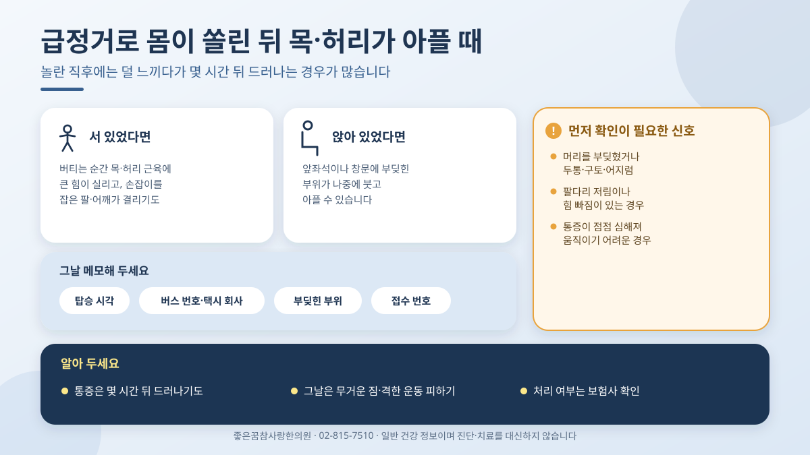

이종호 한의사 감수좋은꿈참사랑한의원 대표원장 (한의사 면허번호 19769)발행 2026-11-24 · 수정 2026-11-25
이 글의 차례
출근길 버스에서 서 있다가 급정거에 몸이 확 쏠리거나, 택시 뒷좌석에서 앞좌석에 부딪히는 일이 있습니다. 넘어지지 않았으니 괜찮겠지 하고 지나갔다가 저녁이 되어 목과 허리가 결린다는 분이 적지 않습니다.
탈 것 안에서 다친 경우에도 탑승 시각과 차량, 부딪힌 부위를 정리해 두면 진료가 수월해지고, 보험 처리 방법은 운행 회사나 보험사에 미리 확인해 두실 수 있습니다.
예를 들어 출근길 버스에서 손잡이를 잡고 서 있다가 급정거에 몸이 앞으로 쏠린 경우, 그 자리에서는 놀라서 별생각 없이 내렸다가 점심 무렵부터 목 뒤와 등이 뻣뻣해지기도 합니다. 이럴 때는 탑승 시각과 노선 번호부터 적어 두시면 나중에 상황을 설명하기 쉽습니다.
왜 이런 불편이 생길 수 있나요
- 서 있다가 몸이 갑자기 앞뒤로 쏠리면, 넘어지지 않으려고 버티는 순간 목과 허리 근육에 큰 힘이 실립니다.
- 손잡이를 꽉 잡은 팔과 어깨가 한쪽으로 당겨지면서 결리기도 합니다.
- 앉아 있던 경우에는 앞좌석이나 창문에 부딪힌 부위가 나중에 붓고 아플 수 있습니다.
- 택시 뒷좌석에서 안전벨트를 매지 않았다면 몸이 앞으로 크게 쏠려 가슴, 무릎, 얼굴이 앞좌석에 부딪힐 수 있습니다.
- 놀란 직후에는 통증을 덜 느끼다가 몇 시간 뒤 드러나는 경우가 많습니다.
먼저 이렇게 여쭙니다
- 그때 서 있었나요, 앉아 있었나요? 어디에 부딪혔나요?
- 통증은 바로 생겼나요, 몇 시간 뒤에 생겼나요?
- 내리면서나 그 뒤에 넘어진 적은 없나요?
- 운행 회사나 보험사에 사고 접수를 하셨나요?
- 손이나 다리가 저리지는 않나요?
일상에서 먼저 해 볼 수 있는 것
- 탑승 시각과 차량 정보(버스 번호·택시 회사), 상황을 메모해 두기
- 사고 사실을 알리는 방법과 처리 절차는 운행 회사나 보험사에 먼저 전화로 확인하기
- 교통카드 사용 내역이나 택시 영수증처럼 탑승 사실을 보여 줄 수 있는 자료 남겨 두기(어떤 자료가 필요한지는 보험사에 확인해 주세요)
- 통증이 생긴 날은 무거운 짐 들기와 격한 운동 피하기
- 며칠 동안은 되도록 자리에 앉고, 서야 한다면 양발을 어깨너비로 벌리고 손잡이를 두 손으로 잡기
- 불편한 동작과 통증 정도를 하루 한 번 기록하기
상황별 예시
- 예를 들어 서 있다가 급정거로 몸이 쏠린 직장인이 회사에 도착해 하루 종일 앉아 있으면, 목과 허리가 점점 굳는 경우가 있습니다. 한 시간에 한 번쯤 일어나 고개를 천천히 돌려 보고, 어느 방향이 불편한지 메모해 두시면 진료 때 도움이 됩니다.
- 예를 들어 어르신이 버스에 올라 자리에 앉기 전에 차가 출발하거나 멈춰 몸이 휘청인 경우, 넘어지지 않았더라도 손목이나 허리, 엉덩이가 아플 수 있습니다. 골다공증이 있거나 엉덩이를 바닥에 찧었다면 영상 검사가 가능한 의료기관에서 먼저 확인받으세요.
- 예를 들어 학원을 마치고 택시 뒷좌석에서 졸다가 급정거로 앞좌석에 부딪힌 학생이라면, 무릎이나 가슴, 이마에 멍이 들 수 있습니다. 머리를 부딪혔거나 두통·구토가 있으면 바로 응급실을 이용하세요.
한의원에서 함께 살필 수 있는 경우
- 급정거 뒤 목과 허리가 뻐근한 경우, 부딪힌 부위와 불편한 동작을 함께 살핍니다.
- 통증 때문에 잠을 설치는 경우, 잠과 긴장도 함께 살핍니다.
- 운행 중 차량 사고는 자동차보험이나 공제로 처리되는 경우가 있지만, 처리 가능 여부와 필요한 서류는 사고 상황과 운행 회사·보험사에 따라 다릅니다. 보험사(또는 운행 회사)와 한의원에 방문 전 전화로 확인해 주세요.
좋은꿈참사랑한의원에서는 먼저 탑승 상황과 불편한 동작을 충분히 듣고, 필요하다고 판단될 때 초음파 등으로 아픈 자리를 살핀 뒤 침·약침·추나 등 상태에 맞는 방법을 정합니다.
첫 방문에는 언제 어떤 차량에서 어떻게 몸이 쏠렸는지, 부딪힌 부위와 저림 여부를 여쭌 뒤 맥을 짚고, 목과 허리를 숙이고 젖히고 돌릴 때 어느 방향이 불편한지, 팔다리 힘은 어떤지 확인합니다. 영상 검사가 필요하다고 판단되면 검사가 가능한 의료기관을 안내합니다. 귀가 전에는 출퇴근길에 조심할 동작과 다음 진료에서 확인할 일을 알려 드립니다.
진료 시간은 평일 09:30~20:00(점심 13:00~14:00), 토·일·공휴일 09:30~15:00(점심시간 없음)입니다.
스스로 점검해 보세요
- 머리를 부딪히지 않았고 두통·구토·어지럼이 없다
- 팔이나 다리로 뻗치는 저림, 힘 빠짐이 없다
- 고개를 좌우로 돌리거나 숙일 때 어느 쪽이 불편한지 말할 수 있다
- 부딪힌 자리가 점점 붓거나 멍이 넓어지지 않는다
- 탑승 시각, 노선 번호나 택시 회사, 앉았는지 서 있었는지를 적어 두었다
- 운행 회사나 보험사에 사고 사실을 알리는 방법을 전화로 확인했다
이렇게 기록해 오시면 상담이 쉬워집니다
- 날짜와 시각, 탄 차량(버스 노선 번호나 택시 회사)
- 서 있었는지 앉아 있었는지, 부딪힌 부위
- 운행 회사·보험사 이름과 접수 번호
- 통증이 시작된 시각과 가장 불편한 동작
- 사고 뒤 버스나 택시를 다시 탈 때 긴장되는지, 잠은 어떤지
이런 증상은 먼저 확인이 필요합니다
- 머리를 부딪혔거나 두통, 구토, 어지럼이 생긴 경우
- 팔다리 저림이나 힘 빠짐이 있는 경우
- 가슴을 부딪힌 뒤 숨을 깊이 쉬기 어렵거나 기침할 때 아픈 경우
- 통증이 점점 심해져 움직이기 어려운 경우
사고 직후에는 응급 확인이 먼저입니다. 머리를 부딪혔거나 의식이 흐렸던 적이 있다면 영상 검사가 가능한 병원을 먼저 찾고, 위급하면 가까운 응급실을 이용하세요.
얼마나 지켜보고 언제 상담할까요
- 급정거 뒤 뻐근함은 몇 시간 뒤나 다음 날 드러나는 경우가 많아, 응급 신호가 없다면 하루 이틀은 불편한 동작과 정도를 적으며 지켜보셔도 됩니다.
- 사흘이 지나도 뻐근함이 줄지 않거나 출퇴근길에 서 있기 힘들 만큼 불편하면 상담을 받아 보세요.
- 처음엔 괜찮다가 일주일 안팎에 아파지는 경우도 있어, 늦게 시작된 통증도 언제부터였는지 알려 주시면 함께 살핍니다.
- 저림이나 힘 빠짐, 두통·구토, 숨쉬기 불편함이 생기면 기다리지 말고 바로 응급실을 찾거나 가까운 응급실로 가세요.
관련 글
- 버스나 지하철이 급정거한 뒤 목과 어깨가 아픈 것은 어떻게 살피나요?
- 편타손상(채찍질 손상)은 무엇이고 어떤 때 병원을 먼저 가나요?
- 교통사고 뒤 출근길 지하철·버스에 서 있으면 목과 허리가 불편할 때는 어떻게 살피나요?

여쭙는 것
- 그때 서 있었나요, 앉아 있었나요? 어디에 부딪혔나요?
- 통증은 바로 생겼나요, 몇 시간 뒤에 생겼나요?
- 내리면서나 그 뒤에 넘어진 적은 없나요?
생활에서 해 볼 것
- 탑승 시각과 차량 정보(버스 번호·택시 회사), 상황을 메모해 두기
- 사고 사실을 알리는 방법과 처리 절차는 운행 회사나 보험사에 먼저 전화로 확인하기
- 교통카드 사용 내역이나 택시 영수증처럼 탑승 사실을 보여 줄 수 있는 자료 남겨 두…
한의원에서 함께 살필 것
- 급정거 뒤 목과 허리가 뻐근한 경우, 부딪힌 부위와 불편한 동작을 함께 살핍니다.
- 통증 때문에 잠을 설치는 경우, 잠과 긴장도 함께 살핍니다.
- 운행 중 차량 사고는 자동차보험이나 공제로 처리되는 경우가 있지만, 처리 가능 여부…
먼저 확인이 필요한 신호
- 머리를 부딪혔거나 두통, 구토, 어지럼이 생긴 경우
- 팔다리 저림이나 힘 빠짐이 있는 경우
- 가슴을 부딪힌 뒤 숨을 깊이 쉬기 어렵거나 기침할 때 아픈 경우
한눈에 보는 표
| 구분 | 핵심 |
|---|---|
| 여쭙는 것 | 그때 서 있었나요, 앉아 있었나요? 어디에 부딪혔나요? 통증은 바로 생겼나요, 몇 시간 뒤에 생겼나요? |
| 생활에서 해 볼 것 | 탑승 시각과 차량 정보(버스 번호·택시 회사), 상황을 메모해 두기 사고 사실을 알리는 방법과 처리 절차는 운행 회사나 보험사에 먼저 전화로 확인하기 |
| 한의원에서 함께 살필 것 | 급정거 뒤 목과 허리가 뻐근한 경우, 부딪힌 부위와 불편한 동작을 함께 살핍니다. 통증 때문에 잠을 설치는 경우, 잠과 긴장도 함께 살핍니다. |
| 먼저 확인이 필요한 신호 | 머리를 부딪혔거나 두통, 구토, 어지럼이 생긴 경우 팔다리 저림이나 힘 빠짐이 있는 경우 |
자주 묻는 질문
넘어지지 않았는데도 아플 수 있나요?
급정거로 몸이 갑자기 쏠리면 넘어지지 않아도 목과 허리가 뻐근해질 수 있어, 상황을 자세히 여쭙습니다.
접수 번호가 없으면 진료를 못 받나요?
진료는 받을 수 있습니다. 다만 보험 처리 여부와 필요한 서류는 접수 상황에 따라 달라, 운행 회사나 보험사와 한의원에 방문 전 전화로 확인해 주세요.
며칠 지나서 아파지기 시작했는데 지금 가도 되나요?
네. 통증이 늦게 시작되는 경우도 있어 언제부터 어떻게 아팠는지 기록해 오시면 함께 살핍니다.
아픈데 출근은 해도 되나요?
응급 신호가 없고 움직일 수 있다면 일상은 이어 가되, 며칠은 오래 서 있거나 무거운 짐을 드는 일을 줄여 보세요. 불편이 커지면 상담해 주세요.
좋은꿈참사랑한의원은 재진 때 지난번 이야기부터 이어서 여쭙니다. 진료시간과 예약은 오시는 길에서 확인하세요.
어디서 상담받을 수 있나요?
좋은꿈참사랑한의원은 서울 동작구 만양로2길 2 신성빌딩 3층·5층(서울 동작구 상도동, 7호선 상도역 3번 출구 근처)에 있습니다. 한의사 3명(이종호 대표원장, 조영기 수석진료원장, 정원영 진료원장)이 진료합니다. 진료시간은 평일 09:30~20:00(점심 13:00~14:00), 토·일·공휴일 09:30~15:00이며, 방문 전 전화로 확인을 권합니다. 예약은 네이버 예약, 카카오톡 상담, 전화 02-815-7510로 받습니다.
이 글은 일반적인 건강 정보이며 개인의 진단이나 치료를 대신하지 않습니다. 증상이 있거나 복용 중인 약이 있다면 진료를 통해 확인하세요. 치료 효과는 개인마다 다를 수 있습니다.
작성 기준: 일반적으로 알려져 있는 건강 정보를 참고해 정리했습니다(대표원장 감수). 증상 기록은 1~2주 동안 하루 1회, 비슷한 시간에 적어 오시면 지난 상태와 비교하기 쉽습니다.